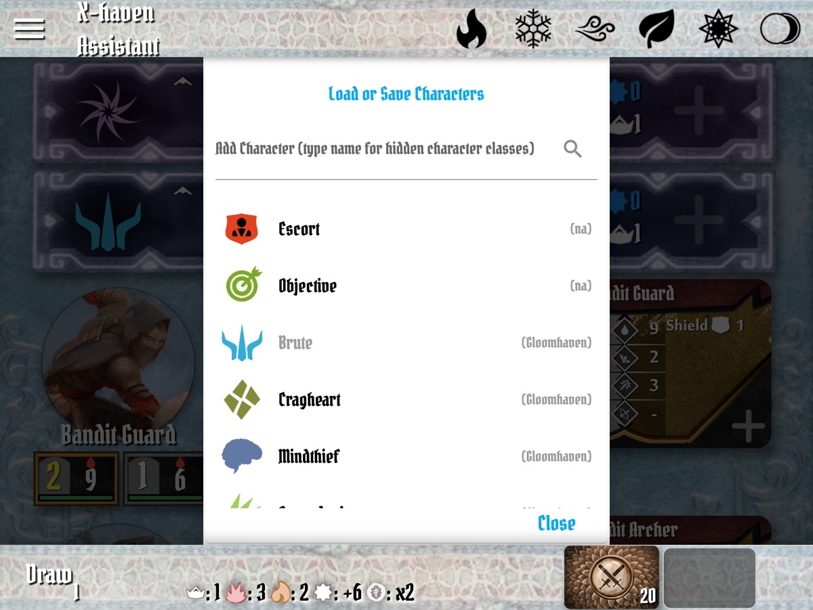
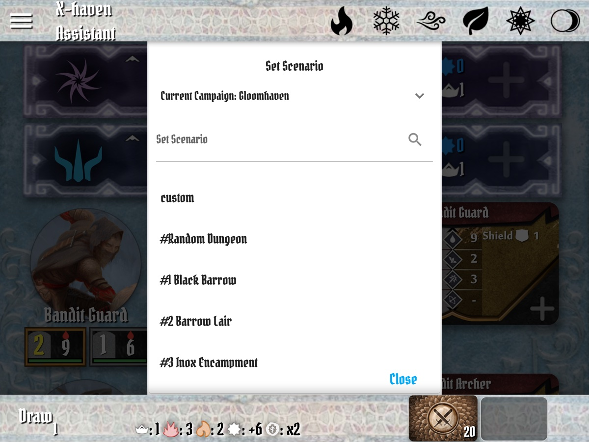
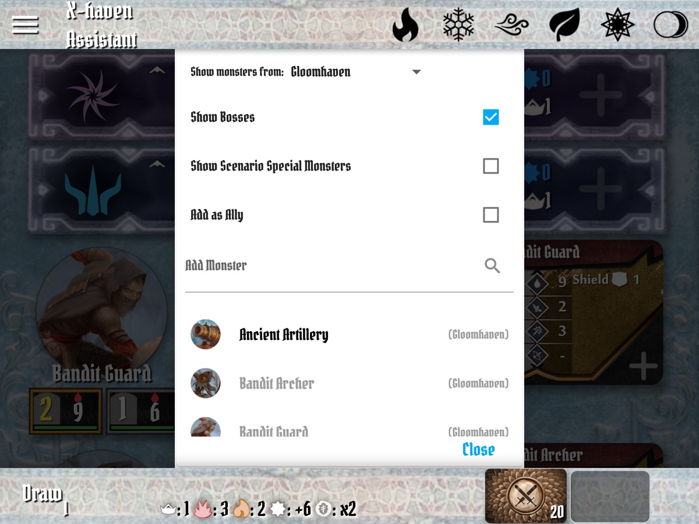
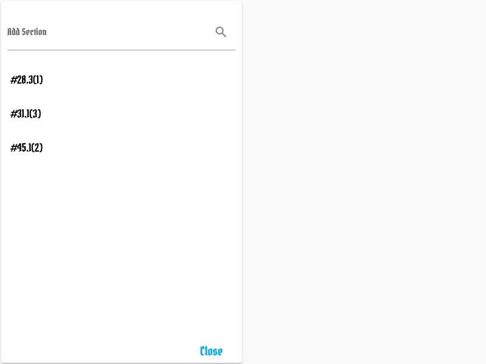
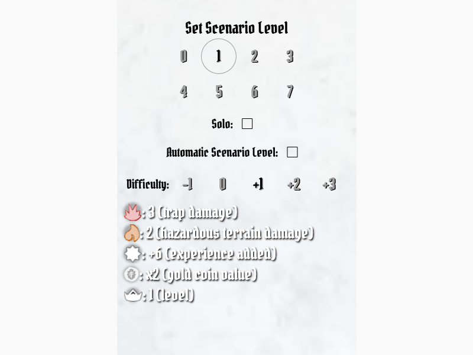

X-Haven Assistant — User Manual
§4Setting Up
§4.1Character lifecycle: create, save, remove, load
Characters in the app go through four operations across a campaign: create them when they join the party, save them between sessions, remove them when the scenario ends or someone retires, and load them back when the next scenario starts. All four live behind the Add Character menu and its Load or Save Characters sub-menu — close enough together that you'll bounce between them in a single session.
The walkthrough below uses three characters to motivate each step:
- Brute — the manual's anchor character; melee, simple, level 1 to start.
- Spellweaver — added partway through to demonstrate elements (§2.7).
- Tinkerer — added later to demonstrate the "new character joins an existing party" path.
Create
Sidebar (§3.5) → Add Character. The menu (AddCharacterMenu, lib/Layout/menus/add_character_menu.dart) lists every class the app knows about, sorted with the current campaign's classes first.

??? entry is a placeholder for a hidden/locked Frosthaven class — typing its name in the search field reveals it. The Load or Save Characters banner at the top opens the persistence menu (covered below).Tap a class to add it at level 1 with the default name. To start above level 1, do two steps: add at 1, then Set Level on the sidebar (or tap the level on the character banner). To rename, tap the name on the banner — purely cosmetic, doesn't affect game state.
Walkthrough — assemble the starting party. Tap Add Character, pick Brute. The Brute appears in the main list (orange-and-blue banner with the horned-helm icon). Repeat: Add Character → Spellweaver. The two banners stack in the order added; the list will reorder by initiative once the round starts.
Save
From the Add Character menu, tap the Load or Save Characters banner at the top. This opens SaveCharacterMenu (lib/Layout/menus/save_character_menu.dart), which lists every character currently in the party and every previously-saved character on this device.
To save a character: enter a save name (e.g., Tuesday Crew) and tap the save row for the character. Behind the scenes the app stores everything that's character-specific — class, name, level, current HP, conditions, XP, summons, and the full perk-checkbox state — keyed by "<save name>\n<character id>" in shared preferences (Settings.saveCharacterState, lib/Resource/settings.dart). The save survives app restart and device reboot.
Practically: save names group your party. Save Brute and Spellweaver under the same name (Tuesday Crew) and they'll come back together when you load. Save the Spellweaver alone under solo-spellweaver-experiment and you've got a separate slot for one-off play.
Walkthrough — between scenarios. Your group just finished Black Barrow. Brute earned 14 XP and bought a perk; Spellweaver dropped to 4/8 HP and is still poisoned. Save both: Load or Save Characters → name it Tuesday Crew, end of #1 → tap save on each row. The current state — including the lingering Poison — is now persisted exactly as it stands.
Remove
Sidebar → Remove Characters opens RemoveCharacterMenu (lib/Layout/menus/remove_character_menu.dart). Each row is a tap-to-remove for one character; Remove All at the top clears the list in one go.
Removing a character does not delete its save. Your Tuesday Crew save is still there — Remove just takes the character off the active main list. Use this:
- At scenario end, before loading the next scenario's roster.
- When a player can't make a session, save their character and remove it for the night.
- When you accidentally added the wrong class.
Walkthrough — clearing the table. Saved both characters above; now sidebar → Remove Characters → Remove All. Main list is empty. The Tuesday Crew save is still on disk; nothing in-progress was lost.
Load
Back in the Add Character menu, the Load or Save Characters banner also offers loading. The save list shows every character ever saved, grouped by save name. Tap a character entry to load it — the character returns to the main list with the exact state it had when saved (HP, conditions, perks, level, XP). Saves stay on disk after loading; you can load the same save multiple times if needed.
Loaded characters merge into the current main list. If you've already added a Brute and you load a saved Brute, you'll have two Brutes in the list (different ids — the app distinguishes them). To replace rather than append, remove first then load.
Walkthrough — next session, with a new face. Open the app: empty main list. Add Character → Load or Save Characters → tap the saved Brute under Tuesday Crew, end of #1, then the saved Spellweaver. Both come back at their saved levels and HP. The Spellweaver is still poisoned — clear that with Undo if it shouldn't carry, or just tap the Poison icon on the banner to remove it.
The party's friend is in town this week and will play a Tinkerer. Sidebar → Add Character → Tinkerer. The Tinkerer joins at level 1; Set Level on the sidebar to bring them up to the party's level. They have no perks — the player will pick those during their first scenario per the rulebook. Save the Tinkerer at end of session under the same Tuesday Crew name to keep the roster aligned.
§4.2Setting a scenario
Sidebar → Set Scenario. The menu (SelectScenarioMenu, lib/Layout/menus/select_scenario_menu.dart) has two parts:
- Campaign picker at the top — switches between editions (Gloomhaven, Frosthaven, Jaws of the Lion, etc.). Switching campaign changes which scenarios appear in the list below; characters from other editions remain in the main list.
- Scenario list — every scenario the picked campaign knows about, sorted by scenario number. The
customentry at the top is a blank scenario for ad-hoc setups.

What setting a scenario does. Auto-populates monster types in the main list (§3.3), the scenario stat line in the bottom bar (§3.4), and any scenario-specific reminders (§6.3). It does not place individual standees — those are added by tapping the monster widget's + control during play. Battle goals are also not tracked (kept on physical cards by design); PR #250 covers Buttons & Bugs single-character-mode considerations.
§4.3Adding monsters manually
Sidebar → Add Monsters. Distinct from §4.2 Set Scenario: Set Scenario auto-populates a fixed roster, while Add Monsters (AddMonsterMenu) adds an arbitrary monster type to the current main list.

Use cases:
- Custom scenarios. Building a one-off encounter outside any published scenario.
- Mid-scenario reinforcements not from a section. Some scenario texts say "spawn an X" without an associated section card — add it manually here.
- Allies. Toggle Add as Ally to add the monster on the character side (uses the allies AMD). Useful for special scenario figures controlled by the players.
Tapping a monster type adds it at the current scenario level. Standees for the new type are then added through the monster widget's + control.
§4.4Adding sections
Sidebar → Add Section. The menu (AddSectionMenu) lists the sections defined for the currently-set scenario that haven't yet been added. Use it when the scenario book reveals a section card mid-play — typically when a door is opened, a tile is unlocked, or a trigger fires.

Adding a section auto-spawns the section's monsters into the main list, applies any scenario rules listed for that section, and surfaces the section's reminders. Sections that introduce monsters of types already present add additional standees of that type rather than duplicating the monster widget.
§4.5Custom difficulty
Difficulty adjustments come in three flavors, each at a different scope:

SetLevelMenu) — the global form, opened via the bottom bar's level widget (§3.4). Levels 0–7 across the top, then Solo and Automatic Scenario Level toggles, then a Difficulty offset row (−1 / 0 / +1 / +2 / +3). The legend at the bottom resolves the chosen level into the four scenario constants — trap damage, hazardous terrain damage, experience added, gold coin value — plus the effective monster level. Per-monster and per-standee variants of this menu (long-press on a stat card) replace the legend with override controls.- Scenario level (global) — tap the level widget on the bottom bar (§3.4). The Set Level menu (
SetLevelMenu) lets you pick a level 0–7 and apply a difficulty offset (Easy −1, Normal 0, Hard +1, etc.). Affects every monster's stats simultaneously. The legend at the bottom of the menu shows the resulting numeric monster level for the chosen scenario level + difficulty. - Per-monster level — long-press a monster type's stat card to override its level. Useful for elite-only re-leveling, or for scenarios where the rules call out a single monster at a different level.
- Per-monster max HP — same menu offers a max-HP override for one specific standee. House-rule territory; most groups never touch this.
The bottom-bar level widget is also where you'd set auto-level adjust (the app re-computes scenario level based on character levels) and solo mode (single-character scaling). These persist across scenarios and are stored in settings, not game state — they survive a fresh "Set Scenario."